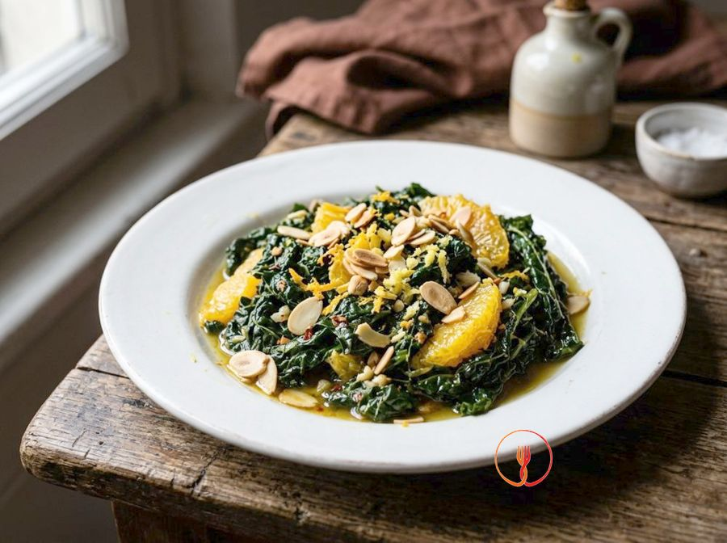

Steak di cavolfiore brasato al vino rosso e timo
Una 'bistecca' vegetale spessa e saporita, brasata lentamente in un fondo di vino rosso che le conferisce un colore intenso e un gusto deciso.
Ingredienti
- Cavolfiore grande e compatto1 pezzo
- Vino rosso fermo (tipo Merlot o Sangiovese)300ml
- Brodo vegetale200ml
- Concentrato di pomodoro1 cucchiaio
- Aglio2 spicchi
- Timo fresco4 rametti
- Farina di riso2 cucchiai
- Olio extravergine d'oliva4 cucchiai
- Sale e pepe neroq.b.
Allergeni
Sedano, Solfiti
Procedimento
- Inizia pulendo il cavolfiore grande dalle foglie esterne verdi, facendo attenzione a non intaccare il torsolo centrale che è fondamentale per la tenuta del piatto. Appoggia l'ortaggio sul tagliere e pratica dei tagli verticali decisi per ricavare 4 fette spesse circa 2,5-3 cm, mantenendo la parte centrale del tronco in ogni fetta. Lavora con un coltello da chef ben affilato per ottenere tagli netti e simmetrici che ricordino la forma di una bistecca. Il risultato ideale sono delle 'steak' compatte che non si sbriciolano al tatto. Il mio consiglio: non buttare le cimette laterali che avanzano, puoi usarle per una vellutata o un contorno saltato.
- Prendi le tue 4 fette di cavolfiore e condiscile uniformemente con un pizzico di sale e pepe nero macinato fresco su entrambi i lati. Passale delicatamente in 2 cucchiai di farina di riso, premendo leggermente con il palmo della mano per farla aderire bene, poi scuoti con cura ogni fetta per eliminare la farina in eccesso. Questa operazione va fatta appena prima di cuocere per evitare che l'umidità naturale del cavolfiore renda la farina appiccicosa. Otterrai una superficie asciutta e leggermente velata, perfetta per creare una crosticina in cottura. Il mio consiglio: la farina di riso è il segreto per una doratura extra croccante e rende il piatto naturalmente adatto anche a chi evita il glutine.
- In un'ampia padella antiaderente che possa contenere comodamente tutte le fette, versa 4 cucchiai di olio extravergine d'oliva e aggiungi 2 spicchi d'aglio schiacciati 'in camicia' (con la buccia) e 4 rametti di timo fresco. Scalda il tutto a fiamma media per circa 2 minuti, muovendo la padella per distribuire gli aromi nell'olio senza bruciare l'aglio. Dovrai sentire un profumo intenso sprigionarsi dalle erbe e l'olio dovrà iniziare a sfrigolare leggermente. Questo passaggio crea la base aromatica che darà carattere e profondità a tutto il piatto. Il mio consiglio: tieni la fiamma moderata per non bruciare le foglie di timo, che altrimenti diventerebbero amare rovinando il fondo.
- Adagia con estrema cura le steak di cavolfiore nella padella calda, posizionandole in modo che non si sovrappongano tra loro. Alza leggermente la fiamma a un'intensità medio-alta e lascia rosolare per circa 4 minuti per lato senza toccarle continuamente, così da favorire la reazione di Maillard. Usa una spatola larga per girarle solo quando i bordi inizieranno a scurirsi vistosamente e la base sarà ben staccata dal fondo. Il risultato finale di questa fase deve essere una crosticina bruna, invitante e uniforme su entrambe le facce. Il mio consiglio: se la padella non è abbastanza grande, cuoci le fette in due riprese per evitare che la temperatura dell'olio scenda troppo, impedendo la doratura.
- Quando le fette sono perfettamente rosolate, versa 300ml di vino rosso fermo (come un Merlot o un Sangiovese) direttamente nella padella, facendo attenzione agli eventuali schizzi di vapore. Mantieni la fiamma vivace per circa 2 minuti per permettere alla parte alcolica di evaporare completamente, lasciando sul cavolfiore solo l'essenza aromatica e il colore vibrante del vino. Sentirai un profumo vinoso intenso e vedrai il liquido ribollire vigorosamente attorno alla base delle steak. Questo processo di sfumatura è essenziale per bilanciare la dolcezza del cavolfiore con l'acidità nobile del vino. Il mio consiglio: usa sempre un vino di buona qualità che berresti volentieri, poiché il sapore si concentrerà notevolmente durante la riduzione.
- In una ciotolina o un boccale, sciogli 1 cucchiaio di concentrato di pomodoro in 200ml di brodo vegetale caldo, mescolando con cura con un cucchiaino fino a eliminare ogni grumo. Versa delicatamente questo composto nella padella, distribuendolo negli spazi tra le fette di cavolfiore e non direttamente sopra la crosticina per non ammorbidirla eccessivamente. Il liquido dovrà arrivare a circa metà dell'altezza delle steak, creando l'ambiente umido necessario per la brasatura. Otterrai un fondo di cottura dal colore rosso mattone intenso e profumato. Il mio consiglio: assicurati che il brodo sia ben caldo prima di aggiungerlo per non arrestare bruscamente la cottura e lo sviluppo dei sapori.
- Abbassa la fiamma al minimo, copri la padella con un coperchio che chiuda bene e lascia brasare il cavolfiore per circa 20 minuti complessivi. A metà cottura, solleva il coperchio e gira le fette con estrema delicatezza usando due spatole per mantenere l'integrità della forma. Al termine del tempo, controlla la tenerezza infilzando il torsolo centrale con la punta di un coltellino: dovrà entrare senza incontrare resistenza, come se fosse burro. Il cavolfiore apparirà tenero all'interno ma ancora ben strutturato all'esterno. Il mio consiglio: non avere fretta in questa fase, la brasatura lenta è l'unico modo per far penetrare i sapori del vino e del timo fino al cuore della 'bistecca'.
- Togli il coperchio, alza leggermente la fiamma a intensità media e lascia cuocere per altri 3-5 minuti per far restringere il fondo di cottura rimasto. Muovi delicatamente la padella con un movimento rotatorio (tecnica della nappatura) per glassare le steak con il liquido che si addensa progressivamente grazie alla farina di riso usata inizialmente. La salsa dovrà diventare lucida, scura e vellutata, capace di velare il dorso di un cucchiaio senza scivolare via subito. Spegni il fuoco non appena la consistenza ricorderà quella di uno sciroppo lucido e profumato. Il mio consiglio: se la salsa dovesse restringersi troppo diventando collosa, aggiungi un cucchiaio di acqua calda o brodo per riportarla alla fluidità ideale.
- Trasferisci ogni steak di cavolfiore al centro dei piatti individuali precedentemente riscaldati e irrorale generosamente con la salsa al vino rosso rimasta nella padella. Guarnisci ogni porzione con qualche fogliolina di timo fresco tenuta da parte e una macinata finale di pepe nero per un tocco di freschezza pungente. Il piatto si presenterà come una sofisticata alternativa vegetale alla carne, con un colore rubino profondo e un profumo terroso e avvolgente. Servi immediatamente mentre il fondo è ancora caldo e fluido per garantire la massima esperienza gustativa. Il mio consiglio: accompagna questo piatto con un purè di patate molto setoso o della polenta morbida per raccogliere tutta la deliziosa salsa al vino.
Valori nutrizionali (stima)
| Per porzione (195 g) | Per 100 g | |
|---|---|---|
| Energia | 766 kJ / 183 kcal | 393 kJ / 94 kcal |
| Proteine | 4.3 g | 2.2 g |
| Carboidrati | 14 g | 7.1 g |
| di cui zuccheri | 5.5 g | 2.8 g |
| Grassi | 10 g | 5.3 g |
| di cui saturi | 1.4 g | 0.7 g |
| Fibre | 4.0 g | 2.1 g |
| Sale | 1.5 g | 0.8 g |
Valori stimati con l'AI su dati medi CREA / USDA: sono indicativi e non sostituiscono il parere di un medico o di un nutrizionista.
Apri la ricetta nell'app per la lista della spesa, le schede ingredienti e i negozi vicini.
Ricette correlate

35 minCavolo nero stufato all'arancia, zenzero e mandorle🌿 Ricetta di stagione 45 minFrittelle di Cavolfiore e Curcuma al Forno💰 Salva Euro · circa 0,72 € a persona
45 minFrittelle di Cavolfiore e Curcuma al Forno💰 Salva Euro · circa 0,72 € a persona 37 minFagottini di orata al vapore avvolti in foglie di cavolo nero🌿 Ricetta di stagione
37 minFagottini di orata al vapore avvolti in foglie di cavolo nero🌿 Ricetta di stagione 25 minCuori di Cavolfiore Morbidi alla Ricotta vaccinaAdatto ai bambini💰 Salva Euro · circa 0,39 € a persona
25 minCuori di Cavolfiore Morbidi alla Ricotta vaccinaAdatto ai bambini💰 Salva Euro · circa 0,39 € a persona